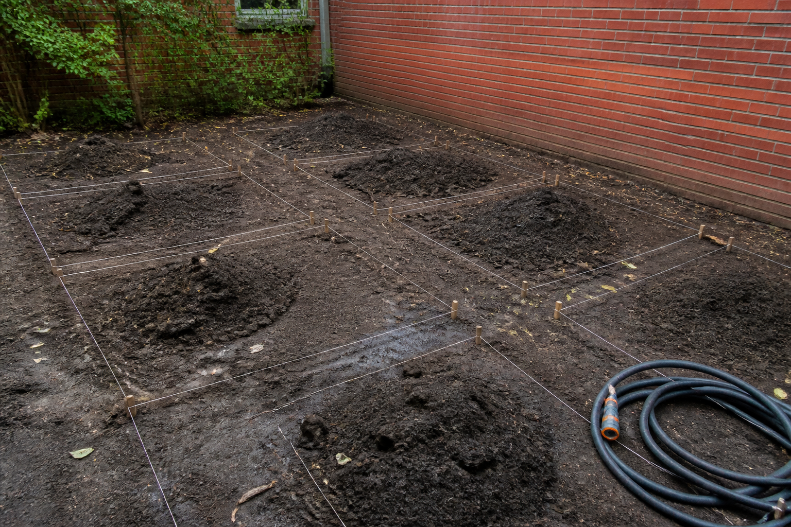

🎯 Ta mission : choisir, chiffres à l'appui, le matériau des huit bacs du jardin parmi les trois qui tiennent tout le cahier des charges — et dire sur combien d'années tu compares.
| Code | Formulation officielle (programme 2024) | Où, dans cette séquence |
|---|---|---|
| 4e_C7.3 | Comparer différents matériaux pour choisir le plus adapté. | Activités 1 à 3 et REFAIRE |
| 4e_C3.2 (appui) | Comparer qualitativement et/ou quantitativement (incidences environnementales, bilan carbone, efficacité énergétique) plusieurs OST répondant au même besoin et arrêter un choix. | Activités 0 et 3, et synthèse |
Référence normative : programme de technologie du cycle 4, BO n°9 du 29 février 2024. Codification opérationnelle : les codes 4e_C3.2 · 4e_C7.3 servent à ranger les séquences ; ils ne viennent pas du programme officiel.
Pour toi, sans note : coche ce qui est déjà en place. Sous chaque ligne, un lien pour le reprendre si tu n'en es pas sûr·e.
→ pas encore sûr·e ? relis « Existe-t-il un bon et un mauvais matériau ? » dans la synthèse 5e_C7.3
→ pas encore sûr·e ? relis « Un matériau excellent peut-il être écarté quand même ? » dans la synthèse 5e_C7.3
→ pas encore sûr·e ? relis « Deux matériaux passent : comment choisir entre eux ? » dans la synthèse 5e_C7.3
Dans cette séquence : trois matériaux passent le cahier des charges. Éliminer ne suffit pas, il faut classer — et tu vas découvrir que le classement dépend d'une décision qu'on oublie presque toujours d'écrire : sur combien de temps on compare.
Un mot à garder en tête : un prix est un instant ; un coût a une durée attachée.
Le jardin connecté du collège a besoin de huit bacs de culture. La station de mesure y prend l'humidité de la terre, et l'arrosage se déclenche tout seul : la terre de ces bacs reste humide en permanence, c'est le principe même de l'installation.
La condition du conseil. Le conseil d'administration a voté le budget et posé une condition écrite : « le collège n'installe pas ce qu'il ne saura pas jeter ». Une exigence de recyclabilité (pouvoir recycler le matériau en fin de vie) entre donc dans le cahier des charges, à côté de la résistance et de la tenue à l'eau.
Six matériaux sont proposés. Trois tiennent le cahier des charges. L'intendance (le service qui gère le budget du collège) demande lequel prendre — et attend une réponse chiffrée.

Trois matériaux passent toutes les exigences. Sur quoi les classe-t-on, quand le moins cher à l'achat n'est pas le moins cher ?
On la reprendra au bilan. Personne ne la corrige : elle sert à mesurer le chemin parcouru.
Le PVC ne se découpe jamais au laser. Chauffé, il dégage du chlorure d'hydrogène : un gaz qui attaque les voies respiratoires, et qui corrode la machine de l'intérieur. Sciage et perçage seulement, avec aspiration. C'est une interdiction, pas une précaution.
La sciure de pin traité autoclave ne se brûle pas et ne se respire pas. Le traitement qui protège le bois de la terre humide est justement ce qui rend ses poussières et ses fumées nocives. Masque, aspiration, et les chutes vont en déchèterie — jamais au feu.
Côté électricité, rien ne change : la station qui équipe le jardin est alimentée en très basse tension, et aucune activité de cette séquence ne fait manipuler le secteur par un élève. Le bac est une pièce de structure : il ne conduit rien.
Une question par ligne du bloc « Avant de commencer ». Elles ne sont pas notées et ne comptent pas dans ta progression : elles te disent quoi relire avant de te lancer. « Je ne sais pas encore » est une réponse utile.
Question directrice : « le plus adapté », c'est adapté à quoi — et pourquoi trois matériaux sur six tombent-ils ?
Au programme : l'ouverture, puis relier chaque exigence à la contrainte qui l'a fait écrire (activité 0, environ 15 min), et faire trier les six candidats par le banc des matériaux (activité 1, environ 25 min).
« Le plus adapté », c'est adapté au cahier des charges des bacs. Avant de le relire ligne par ligne, cinq minutes pour retrouver ce que dit chaque case d'une ligne.
Ce que dit un cahier des charges, en trois mots : pour chaque fonction, un critère, un niveau et une flexibilité. Les mots de référence :
🐙 La leçon complète, avec un cahier des charges entier à compléter : l'atelier de 4e « Le diagramme des interacteurs extérieurs », exercice 6, « Le cahier des charges : critère, niveau, flexibilité », et son cours.
Complète ces deux lignes du cahier des charges du bac de culture, directement dans le tableau : chaque case à menu attend une réponse.
✅ Tu as réussi si… les 9 cases justes, et tu sais dire pourquoi chaque piège ne va pas.
Remplis le tableau colonne par colonne. Pour chaque case, relis la définition du mot, juste au-dessus, dans « Les mots du cahier des charges ».
📌 À retenir : chaque fonction du cahier des charges (FP ou FC) a une désignation qui commence par un verbe à l'infinitif, un critère (ce qu'on mesure), un niveau (un nombre et son unité) et une flexibilité (l'écart que le client accepte, de F0 impératif à F3 très négociable).
⚠ Le piège classique : prendre le niveau (« au moins… ») pour le critère, écrire un niveau sans unité, ou choisir la flexibilité d'après l'importance de la fonction au lieu de l'écart que le client accepte.
Le programme demande de choisir « le plus adapté ». Cette expression ne veut rien dire toute seule : un matériau est adapté à une exigence, et chaque exigence vient d'une contrainte réelle. Avant de comparer, on relit ce que chaque seuil protège.
Associe chaque exigence du cahier des charges à la contrainte qui l'a fait écrire.
Résistance en flexion — au moins 20 MPa (mégapascals)
Tenue à l'eau — au moins 4 sur 5
Recyclabilité — au moins 40 %
Masse de la pièce — au plus 60 kg
Résistance en flexion — au moins 20 MPa — la terre humide pousse sur les parois, avec 1,5 kN sur le grand côté
Tenue à l'eau — au moins 4 sur 5 — la terre reste mouillée en permanence : c'est le principe d'un jardin arrosé
Recyclabilité — au moins 40 % — le collège s'est engagé par écrit à ne pas installer ce qu'il ne saura pas jeter
Masse de la pièce — au plus 60 kg — quatre élèves et un adulte doivent pouvoir le déplacer une fois plein
Aucune de ces quatre lignes ne parle de prix. Le prix n'est pas une exigence du cahier des charges : c'est ce sur quoi on tranche une fois les exigences tenues. Confondre les deux, c'est laisser le budget écrire le cahier des charges — et le cahier des charges ne sert plus à rien.
La troisième ligne est particulière. La recyclabilité n'est pas une contrainte physique : rien ne casse si on l'ignore. C'est un engagement, voté et écrit. Il tient exactement aussi longtemps qu'on le fait tenir — et c'est pour cela qu'on l'inscrit au cahier des charges plutôt que de compter sur la bonne volonté.
Voici le banc, avec les six exigences du bac. Clique sur ⚖ Évaluer les candidats : trois matériaux tiennent, trois tombent. Lis les valeurs en rouge — ce sont elles qui font échouer.
Le banc des matériaux : six candidats, six exigences — et un sélecteur de durée. Change la durée, et regarde la colonne « Coût ».
Les exigences du cahier des charges. Décoche pour retirer un critère, ou change un seuil.
| Critère | Sens | Seuil | Pourquoi ce seuil | |
|---|---|---|---|---|
| Résistance | au moins | la terre humide pousse sur les parois : 1,5 kN (kilonewtons) sur le grand côté | ||
| Tenue au soleil | au moins | dehors toute l'année, sans abri — cinq ans, c'est un cycle de collégiens | ||
| Tenue au sel | au moins | 900 m de la mer : le vent du large porte le sel | ||
| Tenue à l'eau | au moins | la terre reste humide en permanence, c'est le principe d'un jardin arrosé | ||
| Recyclabilité | au moins | le collège s'est engagé à ne pas installer ce qu'il ne saura pas jeter | ||
| Masse de la pièce | au plus | il doit pouvoir être déplacé plein par quatre élèves et un adulte |
| Matériau | Résistance MPa | Tenue au soleil ans | Tenue au sel /5 | Tenue à l'eau /5 | Recyclabilité % | Masse de la pièce kg | Coût € | Verdict |
|---|
Associe chaque matériau recalé au motif de son élimination.
Le pin non traité
Le pin traité autoclave
L'acier galvanisé
Et une question. Le pin traité autoclave coûte 71 € : c'est le moins cher de tous les candidats qui tiennent l'eau, le sel et le soleil. Il est pourtant recalé, sur la seule recyclabilité (20 % contre 40 % exigés). Que faut-il en conclure ?
🔒 Clique d'abord sur « ⚖ Évaluer les candidats » : on ne commente pas un tri qu'on n'a pas fait.
Le pin non traité — il échoue sur trois exigences d'un coup : soleil, sel et eau
Le pin traité autoclave — il tient tout, sauf l'engagement du collège sur le recyclage
L'acier galvanisé — la terre mouillée l'attaque, et le bac ferait 267 kg à vide
Le cas du pin autoclave est le plus instructif des trois. Ce n'est pas un mauvais matériau : c'est un bois rendu résistant à la terre humide par un traitement chimique en profondeur. Et c'est exactement ce traitement qui l'exclut des filières de recyclage du bois : on ne peut plus le broyer avec les autres, ni le brûler en chaufferie. La qualité qu'on est allé chercher a un revers, et le revers arrive à la fin de vie — quand plus personne ne regarde.
C'est ce que le code 4e_C3.2 appelle comparer des objets « sur les incidences environnementales ». Ici, l'incidence n'est pas dans l'usage : elle est dans l'étape d'après.
Question directrice : trois matériaux tiennent toutes les exigences : sur combien d'années les compare-t-on, et lequel retenir ?
Au programme : le classement qui se retourne (activité 2, environ 25 min), choisir la durée avant le matériau (activité 3, environ 15 min), le réinvestissement à Albany (environ 15 min), puis la synthèse, le Bonus, le bilan et le renvoi vers le QCM.
⚠️ À l'atelier : le PVC ne se découpe jamais au laser — sciage et perçage seulement, avec aspiration — et la sciure de pin traité autoclave ne se respire pas. L'encadré complet est dans le rappel, en haut de page.
Trois matériaux tiennent : PP recyclé, PVC et teck. Regarde la colonne « Coût » à l'achat, puis fais glisser le menu Comparer les coûts sur jusqu'à 15 ans. Le banc compte alors les remplacements : un matériau qui dure 8 ans est acheté deux fois en 15 ans, et le petit (2×) à côté du prix te le dit.
↑ Remonte au banc — c'est le même, et il a gardé tes exigences. Une page ne porte qu'un seul banc : deux exemplaires, ce seraient deux instruments qui répondent au même nom.
| Ce que tu lis dans la colonne « Coût » | En euros |
|---|---|
| Le PP recyclé, à l'achat | |
| Le PP recyclé, sur 15 ans | |
| Le teck, sur 15 ans | |
| Le PVC, sur 15 ans |
La question qui compte : à l'achat, le PVC est deuxième et le teck troisième. Sur 15 ans, ils ont échangé leurs places. Pourquoi ?
🔒 Change d'abord la durée de comparaison sur le banc (le menu « Comparer les coûts sur : ») : c'est ce geste-là que l'activité te demande de commenter.
| Ce que tu lis dans la colonne « Coût » | En euros |
|---|---|
| Le PP recyclé, à l'achat | 90 € |
| Le PP recyclé, sur 15 ans | 271 € |
| Le teck, sur 15 ans | 309 € |
| Le PVC, sur 15 ans | 333 € |
Rien n'a changé dans les matériaux. Le PVC coûte toujours 167 € et le teck toujours 309 €. Ce qui a changé, c'est la question posée : « combien coûte l'achat ? » et « combien coûte quinze ans de bac ? » ne sont pas la même question, et elles n'ont pas le même classement.
Le calcul tient en une ligne : sur 15 ans, le PVC (8 ans de vie) est acheté deux fois — 2 × 166,60 = 333,20 € — quand le teck (15 ans) est acheté une seule fois — 309,40 €. Le PP recyclé, lui, est acheté trois fois (6 ans de vie) et reste malgré tout le moins cher : 3 × 90,44 = 271,32 €.
Un prix d'achat n'est pas un coût. Un coût a toujours une durée attachée, et si la durée n'est pas écrite, la comparaison ne veut rien dire. C'est ce qu'on appelle raisonner en coût global.
Le menu du banc propose cinq durées. Essaie-les toutes, et surveille l'ordre des trois retenus. Il ne bouge pas une fois : il bouge deux fois.
↑ Remonte au banc — c'est le même, et il a gardé tes exigences. Une page ne porte qu'un seul banc : deux exemplaires, ce seraient deux instruments qui répondent au même nom.
1. Passe la durée à 20 ans. Le teck, deuxième à 15 ans, redevient dernier. Pourquoi ?
2. Le PP recyclé est le moins cher sur toutes les durées, et le plus recyclable des six (95 %). Sur 15 ans, qu'est-ce que son prix ne dit pas ?
3. Le collège doit trancher. Écris en deux phrases la durée que tu retiens, le matériau qui gagne à cette durée, et pourquoi cette durée-là.
1. Le teck dure 15 ans. Pour couvrir 20 ans, il en faut deux — et le second sera jeté avec dix années de vie devant lui. On paie de la durée qu'on n'utilisera pas. C'est le défaut symétrique du précédent : durer trop longtemps par rapport à l'usage coûte aussi cher que ne pas durer assez.
2. Trois bacs en PP recyclé sur quinze ans, ce sont trois fabrications et trois transports, là où le teck n'en demande qu'un. Le prix ne compte que la matière achetée ; il ne compte ni l'énergie de fabrication, ni les kilomètres. Un matériau très recyclable qu'on remplace souvent n'est pas automatiquement le moins lourd pour l'environnement — c'est une comparaison à faire, pas une évidence.
Et l'inverse est vrai aussi : le teck ne demande qu'un transport, mais il vient d'une forêt tropicale, souvent à dix mille kilomètres. Le banc ne mesure pas cela. Une comparaison honnête dit aussi ce qu'elle ne mesure pas.
3. Les trois réponses se défendent, à condition que la durée soit dite avant le matériau. Sur 4 ans, le PP recyclé, et personne ne discute. Sur 15 ans, le PP encore, mais le teck devient défendable si on veut un seul achat et aucune intervention. Sur 20 ans, le teck est le plus cher des trois : le choisir demanderait un argument qui n'est plus le prix.
Un collège d'Albany, la capitale de l'État de New York — à 200 km de la mer et sous les arbres — veut les mêmes bacs. Deux choses changent : l'air ne porte plus de sel, et les bacs sont à l'ombre presque toute la journée.
Écris : quelle exigence tu peux abaisser, quel matériau cela fait entrer, et si le classement sur 15 ans en est changé.
On peut abaisser « tenue au sel ». À 200 km de la mer et sous couvert, le brouillard salin n'arrive plus. Le seuil passe de 3 à 2, et le pin non traité cesse d'échouer sur ce critère-là.
Mais il ne rentre pas pour autant. Le pin nu échouait sur trois exigences : le sel, le soleil et l'eau. L'ombre règle aussi le soleil — mais la terre du bac reste humide en permanence, et c'est le principe même de l'installation. La tenue à l'eau, elle, ne dépend pas de l'endroit : elle vient de l'objet, pas du site.
Le classement sur 15 ans ne change pas : PP recyclé 271 € · teck 309 € · PVC 333 €. Déplacer le bac de 900 m à 200 km de la mer n'a rien changé au coût global — parce que l'exigence levée n'était pas celle qui décidait.
C'est le résultat le plus utile de la séquence. Changer une contrainte du site ne change pas forcément le choix. Encore fallait-il refaire le calcul pour le savoir : personne ne pouvait le deviner.
Le menu du banc ne propose que cinq durées. À la main, trouve les deux années exactes où le classement bascule : celle où le teck passe devant le PVC, et celle où il repasse derrière. Il suffit de compter les achats — le PVC dure 8 ans (166,60 € l'un), le teck 15 ans (309,40 €).
Puis pose-toi la vraie question : ces deux dates ne dépendent que des durées de vie annoncées. Qui les a annoncées, et sous quel climat les a-t-il mesurées ? Écris en une phrase ce que tu ferais pour le vérifier ici.
On compte les achats. Sur une durée donnée, on rachète un bac chaque fois que le précédent arrive au bout de sa vie. Le PVC (8 ans) s'achète une fois jusqu'à 8 ans, deux fois de 9 à 16 ans, trois fois de 17 à 24 ans. Le teck (15 ans) s'achète une fois jusqu'à 15 ans, deux fois de 16 à 30 ans.
| Durée de comparaison | PVC | Teck | Le moins cher des deux |
|---|---|---|---|
| jusqu'à 8 ans | 1 × 166,60 = 166,60 € | 1 × 309,40 = 309,40 € | le PVC |
| de 9 à 15 ans | 2 × 166,60 = 333,20 € | 1 × 309,40 = 309,40 € | le teck |
| 16 ans | 2 × 166,60 = 333,20 € | 2 × 309,40 = 618,80 € | le PVC |
| de 17 à 24 ans | 3 × 166,60 = 499,80 € | 2 × 309,40 = 618,80 € | le PVC |
Les deux bascules : 9 ans et 16 ans. À 9 ans, il faut un deuxième PVC alors qu'un seul teck suffit encore : le teck passe devant. À 16 ans, il faut un deuxième teck alors que deux PVC suffisent encore : le teck repasse derrière. C'est pour cela que le menu du banc montre le teck devant le PVC à 10 et à 15 ans, et derrière lui à 20 ans. (Le PP recyclé, lui, reste le moins cher des trois sur toutes ces durées.)
D'où viennent les durées ? Dans le banc, ce sont les années de la colonne « Tenue au soleil ». Dans la réalité, une durée de vie est annoncée par le fabricant ou le fournisseur, d'après ses propres essais : un vieillissement en laboratoire, ou un climat qui n'est pas forcément celui de la cour, à 900 m de la mer, au soleil et au sel.
Pour vérifier ici, une phrase suffit, par exemple : « je demande au fournisseur dans quelles conditions il a mesuré cette durée, et ce que couvre sa garantie », ou « je pose un échantillon de chaque matériau dans la cour et je note, saison après saison, quand il commence à se dégrader », ou encore « je cherche un bac du même matériau installé près de la mer depuis plusieurs années ».
Attendus : les deux années, 9 ans et 16 ans ; le calcul qui les justifie (le nombre d'achats multiplié par le prix d'un bac) ; qui annonce une durée de vie (le fabricant, le fournisseur) ; un moyen concret de la vérifier sur place.
Erreurs typiques : répondre « 8 ans et 15 ans » — à 8 ans un seul PVC suffit encore, on ne rachète qu'à partir de la neuvième année ; diviser chaque prix par sa durée (environ 20,83 € par an pour le PVC, 20,63 € pour le teck) — on n'achète pas un bac à l'année, on l'achète entier ; croire qu'une durée de vie est une propriété fixe du matériau, valable sous tous les climats.
🔙 Ton idée de départ : —
Compare : ta réponse de départ parlait-elle d'une durée ?
Comment j'ai travaillé :
Les quatre niveaux sont ceux du livret scolaire :
maîtrise insuffisante · maîtrise fragile · maîtrise satisfaisante · très bonne maîtrise.
Aucun n'est une note : choisis celui qui décrit ce que tu fais aujourd'hui.
30 questions sur la comparaison des matériaux, le coût global et ce qu'un prix ne dit pas. 20 portent sur le choix du matériau, 10 sur la comparaison d'objets répondant au même besoin.
🚀 Ouvrir le QCM d'entraînement